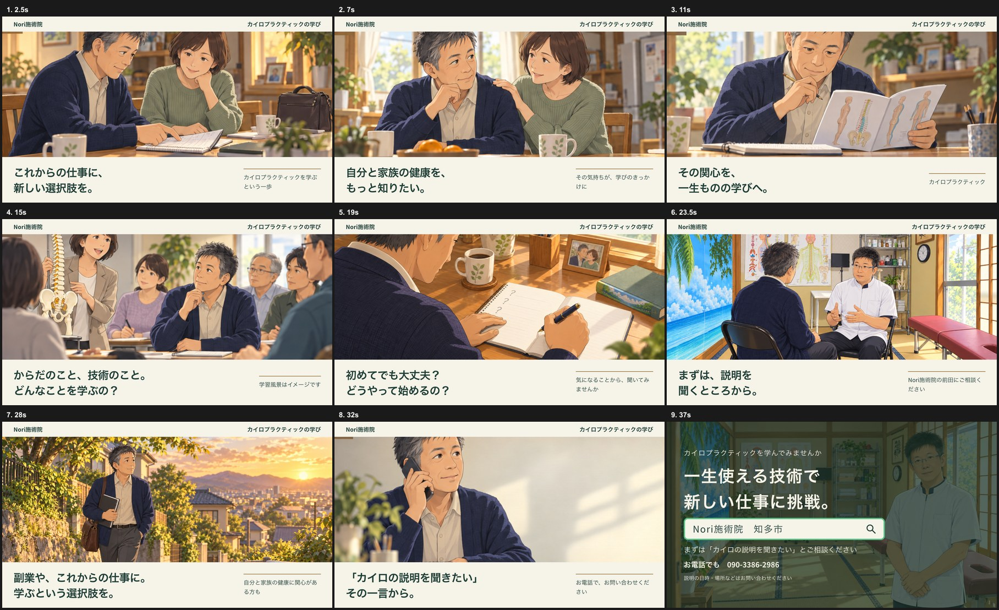

相談先を探している人へ
先生と実際の院内を見せ、初回予約の不安を減らす。
実写風 → 初回予約 → 来院集客2本・説明会1本。3本目はテロップ入りの40秒仮動画に更新。1・2本目の参考は再調査・比較中です。
先生と実際の院内を見せ、初回予約の不安を減らす。
実写風 → 初回予約 → 来院仕事・家事の場面から、自分も相談しようと思ってもらう。
アニメ → 初回相談・予約 → 来院自分・家族の健康や将来への関心を、説明を聞く一歩へ。
アニメ → 問い合わせ → 実参加先生のご要望：近隣の方を中心に幅広く歓迎し、まず集客。年齢・性別は人物設定の仮説であり、受付条件ではありません。
対象：知多市にしの台と通える周辺地域。肩・腰や姿勢が気になり、相談先を探している方。人物設定は55〜75歳程度を仮説とし、男女を限定しない。
ゴール：初回予約の確定 → 実際の初回来院
先生と実際の院内を見せ、「どんな人・どんな場所か分からない」という来院前の不安を減らす。
知多市にしの台で、肩や腰の相談先をお探しなら。Nori施術院の前田です。まずは、気になることを伺います。骨盤や姿勢のことも、ご相談ください。施術についてのご質問も、お気軽に。初回のご予約は、Nori施術院へお電話ください。
対象：同じ来院圏内で、仕事・家事に忙しく自分のケアを後回しにしている方。人物設定は40〜60代の女性を仮説とするが、性別・年齢を受付条件にしない。
ゴール：初回相談・予約の確定 → 実際の初回来院
まだ院を探していない人に日常の場面で気づいてもらい、相談という行動を促す。01とは表現だけでなく検討段階を分ける。
仕事に家事。自分のからだは、つい後回し。気になる肩や腰、相談してみませんか。知多市にしの台の、Nori施術院。気になることから、お話しください。骨盤や姿勢にも、目を向けながら。初回のご相談・ご予約は、お電話で。
40秒・9場面・16:9（1280×720）／静止画とテロップをつないだ仮編集／音声なし。
学びを仕事の選択肢として知る → 自分・家族の健康への関心 → 学ぶ内容と始め方への疑問 → 先生に相談 → 問い合わせ。最後は大きなメッセージと「Nori施術院 知多市」の検索窓、電話番号を6秒間表示。全9場面が別の画像です。V7では先生の年齢感・輪郭・眼鏡、説明場面の画質、メモ場面の左右の手を修正しました。
カイロプラクティックを学ぶという一歩
承認済み静止画を表示。文字は顔を避け、下部の無地帯に配置。
その気持ちが、学びのきっかけに
承認済み静止画を表示。文字は顔を避け、下部の無地帯に配置。
カイロプラクティック
承認済み静止画を表示。文字は顔を避け、下部の無地帯に配置。
学習風景はイメージです
承認済み静止画を表示。文字は顔を避け、下部の無地帯に配置。
気になることから、聞いてみませんか
右手でペンを持ち、左手でノートを押さえる自然な姿勢に修正。
Nori施術院の前田にご相談ください
単独の高解像度画像に更新。先生の顔・年齢感・眼鏡は提供写真を参考に調整。
自分と家族の健康に関心がある方も
新規画像：ノートを持って屋外を歩く主人公。
お電話で、お問い合わせください
承認済み静止画を表示。文字は顔を避け、下部の無地帯に配置。
検索：Nori施術院 知多市／電話：090-3386-2986
提供写真に合わせ先生の年齢感・輪郭・眼鏡を修正。検索窓と電話番号を6秒表示。

料金・所要時間・院内・アクセス・予約方法を一つの案内先にまとめる。電話対応で予約希望日時まで確認します。
同じ来院圏・期間・予約先で比較する案。電話クリックと予約確定、初回来院は別々に記録します。
既存のお客様や健康・学びに関心のある方から開始。説明内容、日時、場所、費用を確認してから参加を募集します。
問い合わせ → 日時確定 → 実参加を記録。集客2本とは別の成果・予算で管理します。
このページは制作レビュー用です。実際の広告の予約先は、先生の受付方法と掲載情報を確認して整えます。
2026年10月11日確認。前回の参考を採用済みとは扱わず、01は新候補を比較、02は選定を保留しています。
15秒／592,967回再生・高評価2（2026-10-11確認）
0:01〜0:05で不調を感じる人、後半で先生と院、0:11〜0:15で検索案内。静止画主体で「悩み→相談先→行動」が短く伝わる。Noriでは肩・腰への関心、前田先生と実際の院内、電話予約へ置き換える。
表現は地方CMの写真スライド調。自律神経など他院の説明をNoriへ転用しない。広告配信の内訳・予約/来院成果は未確認。採用決定ではなく比較候補。
30秒／4,029,939回再生・高評価38（2026-10-11確認）
0:07の表情アップ、0:23の屋外で走る映像を確認。映像の爽やかさと、説明欄で来院用と学び用の案内を分ける点を研究する。
タレント認知に依存し、Noriの具体的な悩み→相談という説明にはAより弱い。再生数だけで主参考にしない。広告内訳・予約/来院成果は未確認。施術後の改善の再現として生成画像を使わない。
zenkenkai公式／30秒
学びを将来の仕事の選択肢につなぐ方向を継続。Noriのv7では、仕事への関心→家族の健康→学びの内容・始め方への疑問→説明の問い合わせを、9場面40秒の静止画動画にした。
参考出演者の実績や人生をNoriの実績にしない。今回の人物と学習風景は架空のイメージ。
整体・健康相談・薬局・保険相談まで調査しましたが、日本アニメの画づくり、相談への分かりやすい流れ、十分な公開反応を兼ね備えた新しい候補を今回は確認できませんでした。前回のサザエさんCMをそのまま再推薦せず、採用は保留します。
公開再生数は、広告費・自然再生・来院数の内訳を示していません。Noriの運用では予約確定と実際の初回来院を成果として記録します。